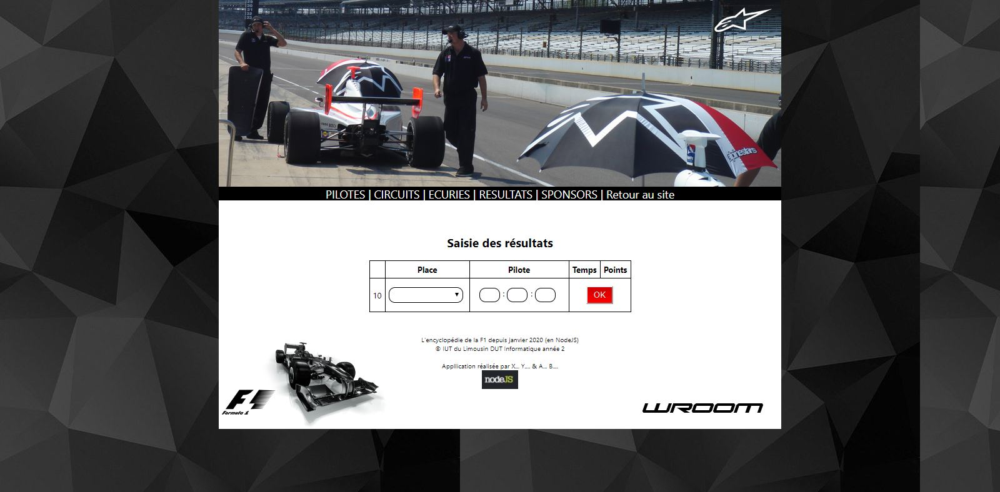

<div class="contenu_4" id="wrooom">
    <div class="collumn">
        <div class="collumn">
            <div class="titre"> Projet Wroom</div>
            <div class="row corps_information" >
                <div class="slideShow" >
                    
                    
                    
                    
                    
                </div>


                <div class="info_projet">
                    <p>Ce projet à été réalisé durant le quatrième semestre de ma formation à l'IUT</p>
                    <p>C'est un site client-serveur. Les requêtes sont réalisés à travers les fonction de node.js</p>
                    <p> L'utilisateur peut consulter l'ensyclopédie de la F1 enrégisterer dans la base de données. Du côté administrateur, on doit se connecter et on peut ajouter dans la base de données de nouvelles informations.</p>

                </div>
            </div>
        </div>
        <div class="lienGit">
            <div class="collumn">
                <div style="margin-bottom: 10px;"></div>
                <div><a href="https://github.com/azf786/MEHMOOD_XU_Wroom" target="_blank">Le code est disponible sur mon GitHub</a></div>
            </div>

        </div>
    </div>
</div>